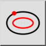
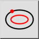
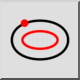
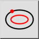

Curva paralelo (a través de un punto)
Barra de herramienta / icono:
 

Menú: Dibujar > Elipse > Curva paralelo (a través de un punto)
Acceso directo: E, G
Comandos: ellipseoffsetthrough | eg
Esta es una traducción automática.
Barra de herramienta / icono:
 

Menú: Dibujar > Elipse > Curva paralelo (a través de un punto)
Acceso directo: E, G
Comandos: ellipseoffsetthrough | eg
Con esta herramienta se pueden crear curvas paralelas a una elipse y pasar por un punto específico.